Baulinien
 | Baulinie (rechtsgültig) |
Zonenplan (ÖREB)
Projektierte Baulinien
Baulinie (aufzuheben) | |
Baulinie (projektiert) |
Baulinien
| Baulinie (rechtsgültig) |
Baulinien Nationalstrassen
Baulinien Nationalstrassen (in Kraft) | |
Baulinien Nationalstrassen (bestehend) | |
Baulinien Nationalstrassen (projektiert) | |
Baulinien Nationalstrassen (aufzuheben) |
Projektierte Gewässerabstandslinien
Gewässerabstandslinie (aufzuheben) | |
Gewässerabstandslinie (projektiert) |
Gewässerabstandslinien
 | Gewässerabstandslinie (in Kraft) |
Projektierte Waldabstandslinien
Waldabstandslinie (aufzuheben) | |
Waldabstandslinie (projektiert) |
Waldabstandslinien
Waldabstandslinie (in Kraft) |
Projektierte Waldgrenzen
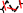 | Waldgrenze (aufzuheben) |
Waldgrenze (projektiert) |
Waldgrenzen (in Bauzonen)
 | Waldgrenze (in Kraft) |
Hofbaulinien (in Bauzonen)
Hofbaulinien (in Kraft) |
Arealüberbauungen
Arealüberbauungen |
Projektierte Quartierpläne
Quartierpläne (projektiert) |
Quartierpläne (ÖREB)
Quartierpläne (in Kraft) |
projektierte Baubereichsflächen
 | Baubereichsflächen (projektiert) |
Baubereichsflächen
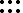 | Baubereichsflächen |
projektierte Gestaltungspläne
 | Gestaltungspläne (projektiert) |
Gestaltungspläne
 | Kantonaler Gestaltungsplan für Materialgewinnung, -ablagerungen, Deponie |
| Kantonaler Gestaltungsplan allgemein |
| Kommunaler Gestaltungsplan |
projektierte Überlagerungspunkte
Aussichtspunkt (projektiert) |
Überlagerungspunkte
Aussichtspunkt |
projektierte Überlagerungslinien
Aussichtsschutz (Linie) | |
Empfindlicher Siedlungsrand | |
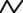 | QEZ-Grenze |
 | Altstadtpassagen |
Überlagerungslinien
Aussichtsschutz (Linie) | |
 | Empfindlicher Siedlungsrand |
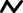 | QEZ-Grenze |
Altstadtpassagen |
projektierte Überlagerungsflächen
Überlagerungsflächen (projektiert) |
Weilerzonen
Kleinsiedlung zu WZ | |
Kleinsiedlung zu LWZ |
Überlagerungsflächen (ÖREB)
Ausschlussgebiet für stark störende Betriebe | |
Baumschutz | |
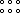 | Gestaltungsplanpflicht |
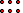 | Sonderbauvorschriften |
Kernzonenplan | |
Terrassenüberbauungen | |
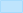 | Weitere Ergänzungspläne |
projektierte Grundnutzung
 | Grundnutzung (projektiert) |
Zonenplan Grundnutzung
 | KI: Kernzone Altstadt |
 | KII: Kernzone Wartstrasse |
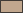 | KIII: Übrige Kernzonen |
 | KIV: Weilerzonen |
QEZ2, QEZ3: Quartiererhaltungszonen | |
W2/1.0, W2/1.2: Wohnzone 2-geschossig | |
W2/1.6: Wohnzone 2-geschossig | |
W2/2.0: Wohnzone 2-geschossig | |
W2G: Wohnzone 2-geschossig mit Gewerbeerleichterung | |
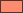 | W3/2.6: Wohnzone 3-geschossig |
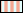 | W3G: Wohnzone 3-geschossig mit Gewerbeerleichterung |
W4/3.4: Wohnzone 4-geschossig | |
W4G: Wohnzone 4-geschossig mit Gewerbeerleichterung | |
 | I1, I1,I2, I2: Industriezone |
G: Gewerbezone | |
Z3: Zentrumszone 3-geschossig | |
Z4,Z5: Zentrumszone 4-,5-geschossig | |
Z6: Zentrumszone 6-geschossig | |
Z7: Zentrumszone 7-geschossig | |
Oe: Zone für öffentliche Bauten | |
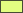 | E1,E1/E2,E2: Erholungszone |
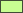 | F: Freihaltezone |
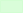 | Lk: Kantonale Landwirtschaftszone |
 | KLw: Kommunale Landwirtschaftszone |
R: Reservezone | |
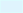 | Gw: Gewässer |
 | BaS: Bahnareale ausserhalb Siedlungsgebiet |
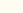 | Sas: Strassen ausserhalb Siedlungsgebiet |
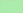 | Wa: Wald |
Nicht zugewiesene Zonen |